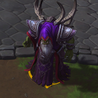
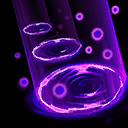
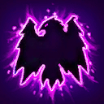
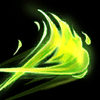
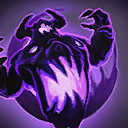
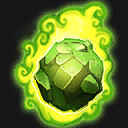
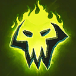

Gul'dan
Welcome to our Gul'dan guide for Heroes of the Storm. Here you will learn everything you need to know in order to play Gul'dan in a competitive environment, whether you play on your own or with a team.
Corruption Build
| Level 1 | Level 4 | Level 7 | Level 10 | Level 13 | Level 16 | Level 20 |
|---|---|---|---|---|---|---|
|  |  |  |  |  |
The Corruption Build is comprised of talents that will maximize Corruption Icon Corruption's overall effectiveness in battle. Completion of Echoed Corruption Icon Echoed Corruption provides Gul'dan with a massive power spike, therefore it is important for Gul'dan to land as many casts of Corruption as possible on enemy Heroes right from the start of a match. Corruption's long range makes it great for defending and sieging fortifications, as well as poking away enemies from capturing battleground specific objectives such as the Altars on Towers of Doom.
Fel Flame Build
| Level 1 | Level 4 | Level 7 | Level 10 | Level 13 | Level 16 | Level 20 |
|---|---|---|---|---|---|---|
|  |
The Fel Flame build is an aggressive build that allows Gul'dan to put out massive amounts of sustained damage to targets within a relatively close proximity. Before team fights, Gul'dan will need to generate stacks of Rampant Hellfire Icon Rampant Hellfire to maximize his damage output. Therefore when possible, he should attempt to land casts of Fel Flame Icon Fel Flame on the enemy frontline in order to be ready when either team fully commits to an initiation. The bonus size of Fel Flame upon completion of Pursuit of Flame Icon Pursuit of Flame will allow Gul'dan to feel somewhat safer as he will need to extend less to harass his opponents.
Go Back